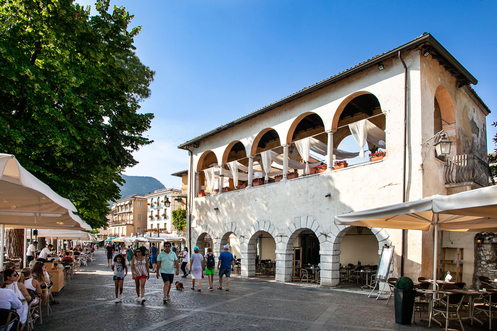
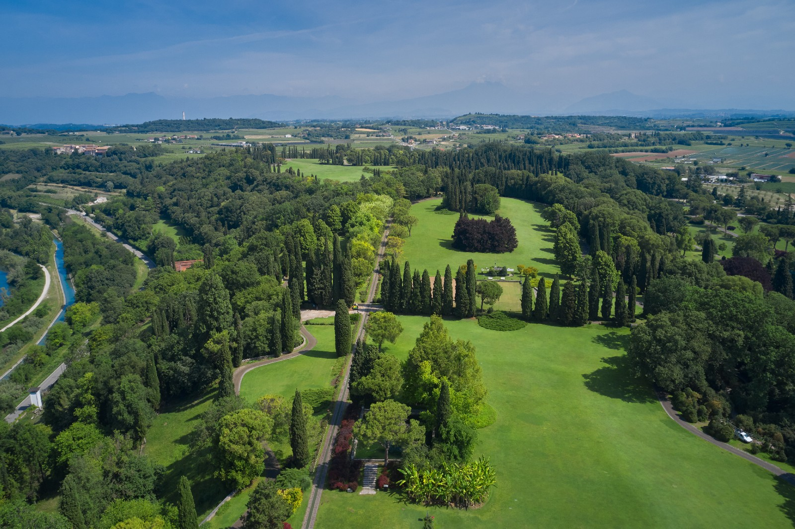
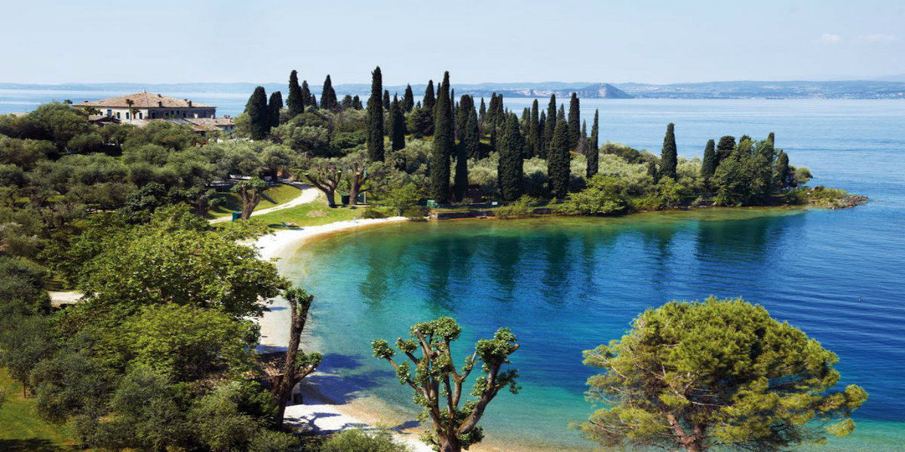
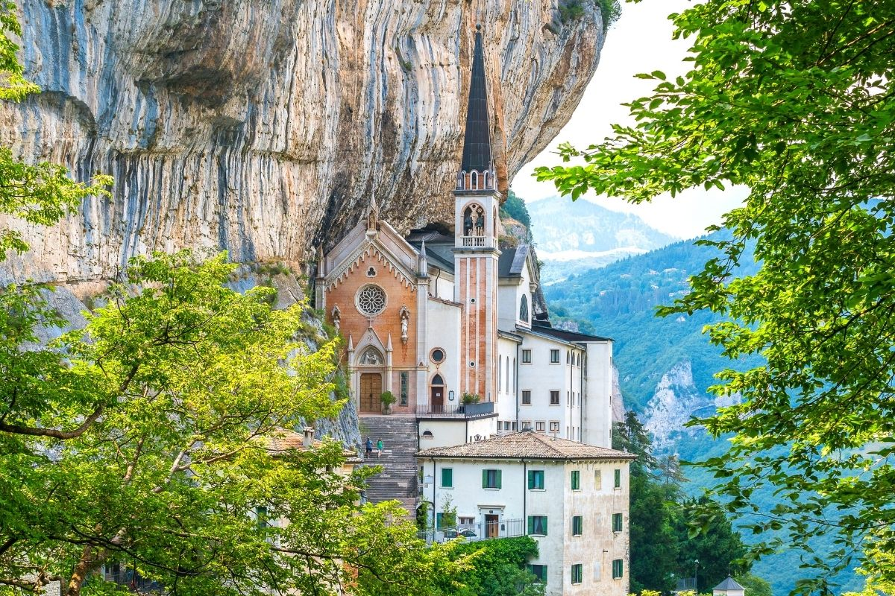

Gli Host
Alex e Valentina: i proprietari
Alex e Valentina saranno i vostri padroni di casa. Saranno a vostra disposizione durante tutto il soggiorno. Vi consiglieranno le mete più interessanti e i posti migliori da raggiungere per apprezzare al massimo il Lago di Garda.
Cosa Visitare
I consigli degli Host

Centro Storico di Garda
15 min


Parco Giardino Sigurtà
45 min

Parco Baia delle Sirene
20 min

Rocca di Garda
20 min
Terme di Sirmione
45 min

Vittoriale degli Italiani
53 min

Verona
35 min

Valpolicella
28 min

Gardaland
20 min

Madonna della Corona
24 min